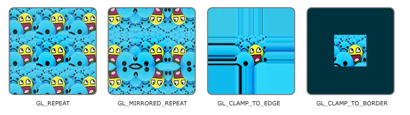
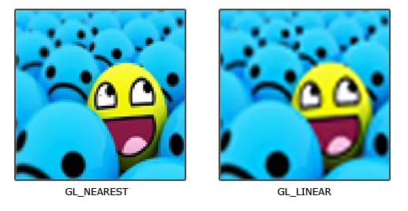
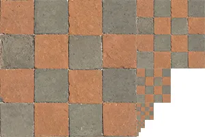

OpenGL 纹理
OpenGL 纹理（Texture）是一种将图像或数据映射到 3D 模型表面的技术，用来为图形添加丰富的细节和真实感。
纹理 (Texture) ：本质上是一个包含像素/纹素（Texel）的向量数组。最常见的是 2D 图像，也可以是 1D、3D 或立方体贴图。
纹理坐标 (Texture Coordinates) ：用于确定图像上哪一部分该映射到物体的顶点上。通常使用 (S, T) 或 (U, V) 表示，范围是归一化的 [0.0, 1.0] （左下角为 (0,0) ，右上角为 (1,1) ）。
采样 (Sampling) ：片元着色器根据插值后的纹理坐标，从纹理对象中提取对应像素颜色的过程。
纹理环绕方式 (Wrapping) ：决定当纹理坐标超出 [0, 1] 范围时，OpenGL 如何绘制边缘（如 GL_REPEAT 重复、 GL_CLAMP_TO_EDGE 边缘拉伸）。

| 环绕方式 | 描述 |
|---|---|
GL_REPEAT | 对纹理的默认行为。重复纹理图像。 |
GL_MIRRORED_REPEAT | 和 GL_REPEAT 一样，但每次重复图片是镜像放置的。 |
GL_CLAMP_TO_EDGE | 纹理坐标会被约束在0到1之间，超出的部分会重复纹理坐标的边缘，产生一种边缘被拉伸的效果。 |
GL_CLAMP_TO_BORDER | 超出的坐标为用户指定的边缘颜色。 |
纹理过滤 (Filtering) ：控制当物体放大或缩小、纹理像素与屏幕像素不匹配时的采样算法。 GL_NEAREST （邻近过滤）：像素化风格，边缘硬朗。 GL_LINEAR （线性过滤）：平滑过渡，边缘模糊。

多级渐远纹理 (Mipmap) ：预先计算并存储一系列分辨率逐渐降低的纹理副本，用于解决远距离物体产生视觉杂波和性能浪费的问题。

| 过滤方式 | 描述 |
|---|---|
GL_NEAREST_MIPMAP_NEAREST | 使用最邻近的多级渐远纹理来匹配像素大小，并使用邻近插值进行纹理采样 |
GL_LINEAR_MIPMAP_NEAREST | 使用最邻近的多级渐远纹理级别，并使用线性插值进行采样 |
GL_NEAREST_MIPMAP_LINEAR | 在两个最匹配像素大小的多级渐远纹理之间进行线性插值，使用邻近插值进行采样 |
GL_LINEAR_MIPMAP_LINEAR | 在两个邻近的多级渐远纹理之间使用线性插值，并使用线性插值进行采样 |